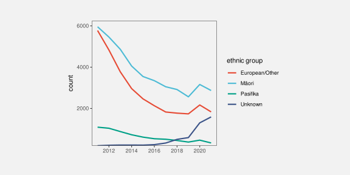
10 Visual Shapes
All of the data visualisations that we have considered so far have encoded a single data value from one or more variables to a single data symbol (Figure 10.1 (a)). For example, a bar plot like Figure 3.1 encodes the number of offenders for one ethnic group to one bar. A scatter plot like Figure 9.4 encodes the number of clean breaks and the number of tries for one team to one data point.
In this chapter, we consider data visualisations that encode multiple data values from one or more variables to a single data symbol (Figure 10.1 (b)). In this chapter, we begin to consider more complex data symbols that produce visual shapes.1

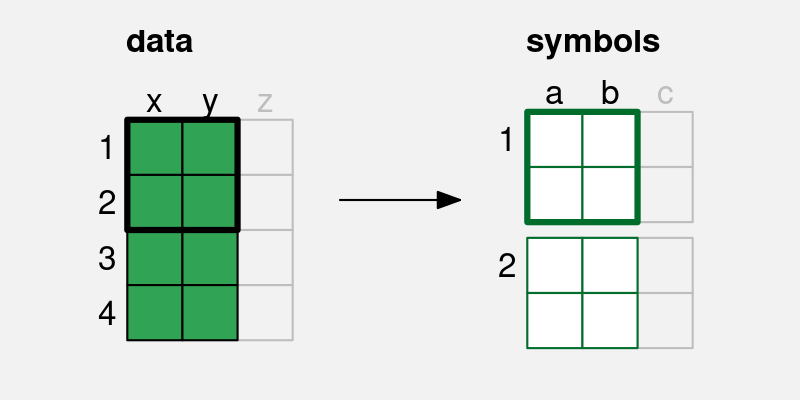
x and y are encoded to the visual features, a and b, of a single data symbol. Multiple pairs of values produce a single data symbol.
10.1 Line plots
Figure 10.2 shows a line plot of the number of offenders per year in different ethnic groups from 2011 to 2021 (Table 5.1). This data visualisation is very effective for perceiving changes over time in the number of offenders within each group as well as comparing the changes over time between groups.
There are some familiar encodings in this data visualisation: year is encoded to horizontal position, the number of offenders is encoded to vertical position, and the ethnic group is encoded to colour. However, the data symbols in this data visualisation, the coloured lines, are different from most of the examples that we have seen. Although there are 44 rows of data, there are only 4 data symbols. Multiple rows of data are used to create each data symbol. Each coloured line in Figure 10.2 represents 11 pairs of year and count values.
This contrasts with visualisations like bar plots that use simpler data symbols. For example, the bar plot of the same data in Figure 5.7 has 44 data symbols (44 bars).
Figure 10.2 is effective at conveying changes over time because the coloured lines create visual shapes (Figure 10.3) and those visual shapes convey information about collections of data values. For example, we can perceive slopes and curves and peaks and valleys in each of the coloured lines.2
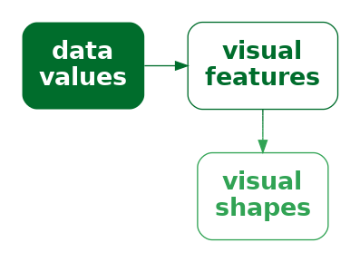
By comparison, in Figure 10.4, which encodes each data value to its own data symbol, it is much harder to decode the slopes, curves, peaks, and valleys. Despite the colours of the data symbols, it is also harder to group the different sets of data symbols together; the connecting lines between the data values in Figure 10.2 are a very strong encoding that the data values belong to the same ethnic group (Section 2.7).
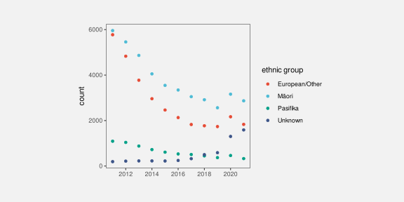
In terms of the simple visual processing model from Section 2.2, these more complicated shapes can convey higher-level information, at the expense of a little more visual processing, and with a limit on how many shapes we can process simultaneously (Figure 2.4). In terms of Chapter 8, the more complex data symbols create visual shapes that allow us to decode data summaries (Figure 10.5). For example, in Figure 10.2 we are able to decode data summaries such as the overall trends in the number of offenders, periods of more rapid change versus periods of slower change, and local maxima and minima.3
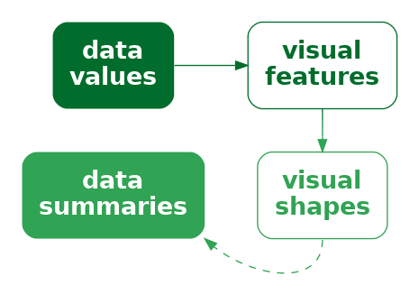
This ability to decode data summaries, such as peaks and slopes, when we use lines as data symbols is even more apparent if we compare Figure 10.2 with Figure 5.7. When we have bars as data symbols, these data summaries are much less apparent.
In terms of Chapter 7, the use of lines for data symbols is also congruent with trends in the data; we naturally associate slopes with increases and decreases in data values.4 For example, it is very natural to decode a downward trend from the lines in a line plot like Figure 1.1. While it is also possible to decode trends from the coloured rectangles in a heatmap like Figure 1.2, the decoding is less immediately obvious.
One reason why line plots are effective is because they encode multiple data values into a complex data symbol that creates a visual shape, from which we are able to decode data summaries.
On the other hand, the more complex data symbols in a line plot, where each data symbol contains multiple data values, are less effective at encoding the individual raw data values. The coloured lines in Figure 10.2 are not simple shapes from which it is easy to decode basic visual features. This means that, although we may be able to decode data summaries, it is not as easy to decode the raw data values (Figure 10.5). For example, compare the ease with which we can determine the number of European/Other offenders in 2013 from Figure 10.2 versus Figure 5.7. Figure 5.7 has simple data symbols that encode a single data value as a basic visual feature of a single data symbol—the length of a bar—so we can easily decode the individual raw data values from the bars.
This deficiency is significant because the main encodings in a line plot are from quantitative data values to (horizontal and vertical) position. We know from Chapter 3 that these should be very effective encodings that allow us to accurately decode the raw data values. However, in a line plot, we are not encoding a single data value to a basic visual feature of a single, simple shape. Instead, a single data value is being encoded, along with many other values, to a basic visual feature of a complicated shape. In effect, the individual data values lose their individual identity.5
One reason why a line plot is less effective for decoding raw data values is because each raw data value is not encoded to its own data symbol.
The creation of visual shapes from multiple data values bears some similarity to the creation of emergent features by combining visual features (Section 9.2). In both cases, we have explicit encodings from data values to basic visual features, but we also produce an implicit additional visual effect. The difference here is that, with visual shapes, we are collapsing multiple data values into a data symbol, so we run a higher risk of losing the ability to perceive individual data values.6
There is also a similarity between visual shapes and visual summaries (Section 8.2). In both cases, we gain the ability to decode data summaries from collections of data values. The difference is that, with visual summaries, we are summarising many simple data symbols that each represent individual data values, whereas with a visual shape we decode the data summary from a single data symbol that obscures the individual data values. In the case of a visual summary, the individual data values can still be decoded, but with a visual shape that is more difficult.
10.2 Case study: Scatter plots with lines
Figure 10.6 shows a data visualisation of the number of offenders per year in different ethnic groups (Table 5.1). This is very similar to Figure 10.2, but we have added a data point at every horizontal and vertical position as well as the lines between positions.
Like Figure 10.2, we can decode overall trends from the line data symbols, but we can also decode individual data values more easily because now every individual data value is also encoded to its own data symbol. By employing both simple data symbols that encode individual data values and complex data symbols that encode multiple data values as visual shapes, we get the best of both worlds.
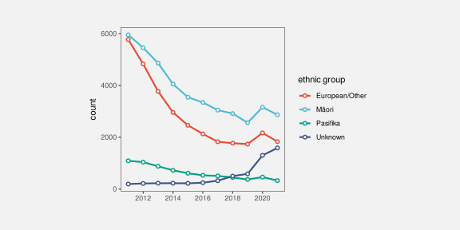
10.3 Case study: Density plots
Figure 10.7 shows a density plot of the number of points scored by Tier One nations at the Rugby World Cups (Table 4.2). As with a histogram (Figure 8.5), this data visualisation is effective for conveying the distribution of data values. For example, we can decode that there is evidence of a single mode and right skew.
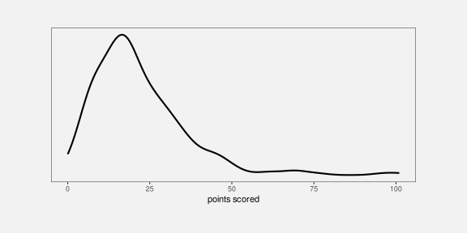
Also like a histogram, a density plot encodes data summaries, rather than raw data values, to visual features (Table 10.1). In the case of a histogram, the data summary values are counts within bins (Table 8.2) and each data summary produces a separate bar. In the case of a density plot, the data summary produces density estimates and these are encoded to a single data symbol, a line, to create a visual shape. The density estimates are encoded to the horizontal and vertical positions of a single line data symbol. The visual shape allows us to decode summaries of the density estimates. For example, whether there is a single maximum density and how the density changes to either side of that peak.
| scored | density |
|---|---|
| 0.00 | 0.0055 |
| 0.20 | 0.0059 |
| 0.40 | 0.0063 |
| 0.59 | 0.0067 |
| 0.79 | 0.0071 |
| 0.99 | 0.0075 |
Figure 10.8 shows the path from raw data values to data summaries (density estimates), which are encoded as the visual features (horizontal and vertical position) of a visual shape (a line) in a density plot and the summary information that we can decode from the visual shape. We cannot decode the raw data values from a density plot, nor can we very easily decode the data summaries (the density estimates). The only real purpose of the data symbol in a density plot is to allow us to decode summaries of the data summaries, which are visual features of the density estimates (like the number of peaks and where the peaks occur).
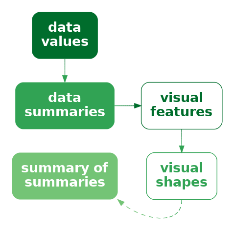
A density plot is effective because it conveys high-level features of density estimates of the raw data.
Another commonality between density plots and histograms is that we get to choose how the data summaries are calculated from the raw data values. In the case of a density plot, we must choose a kernel and a bandwidth, both of which affect the smoothness of the density estimates. In other words, the choice of kernel and bandwidth affects the shape of the line data symbol and that affects the data summaries that we will decode (peaks, slopes, etc). In a histogram, we may need to explore multiple choices of bin width and in a density plot we may need to explore more than one kernel and bandwidth (Section 8.5).
For example, Figure 10.9 shows a density plot of the same data as Figure 10.7, but with a smaller bandwidth. The resulting density curve is much less smooth and so different data summaries can be decoded from the visual shape. This density curve looks a lot more like the histogram with a narrow bin width in Figure 8.8; we can decode a possible second mode and we can even begin to decode peaks at individual numbers of points scored.
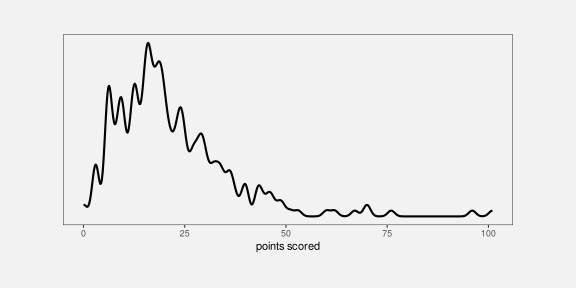
A final point about density plots, especially in comparison to histograms is that it is more effective to present multiple density curves, rather than multiple histograms. This is demonstrated in Figure 10.10 and Figure 10.11. Multiple histograms overlap each other, which makes it difficult to perceive the separate histograms and this is not satisfactorily solved by adding semitransparency. By comparison, multiple density curves create very little overlap, and even though the orange curve passes “under” the blue curve, we effortlessly perceive the orange curve as a single, coherent shape (Section 2.7).
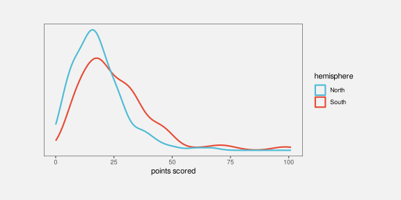
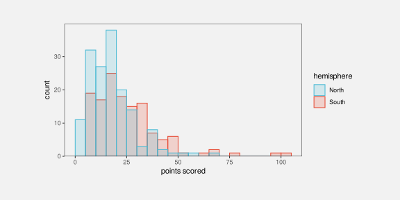
10.4 Visual features of visual shapes
We have emphasised that a data symbol like a line in a line plot is the result of encoding multiple data values as the positions that the line is drawn between. This results in a visual shape that is more effective for decoding data summaries rather than decoding the individual data values.
However, the examples that we have seen in Figure 10.2 and Figure 10.10 also involve another encoding: qualitative data values, like ethnic group or hemisphere, are encoded as the colour of the lines. This encoding is consistent across the entire data symbol. In effect, there is a simple encoding of qualitative data values to a basic visual feature of the visual shape.
This means that it is possible to decode individual data values, such as ethnic group or hemisphere, from a visual shape if the data values have been encoded as a single consistent visual feature of the visual shape (Figure 3.6).
10.5 Aspect ratio
Figure 10.12 shows a variation on Figure 10.2 using a different aspect ratio—the height of the plot divided by the width of the plot. Figure 10.2 has an aspect ratio of 1 (the plot region is square), but Figure 10.12 has an aspect ratio of only 0.2 (the plot region is much shorter than it is wide).
Figure 10.12 shows that the aspect ratio of the plot has a large effect on the visual shapes of the data symbols, which means that the aspect ratio has a large effect on the data summaries that we decode from the visual shapes. For example, in Figure 10.12, we can still see a general downward trend in three of the lines, with one line increasing. However, the peak or jump in values at 2020 is much less obvious. In other words, we decode different data summaries from Figure 10.12 compared to Figure 10.2 purely because of the difference in aspect ratio.
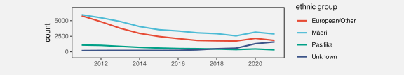
There is no single rule for what the correct aspect ratio should be,7 so we may need to experiment with more than one aspect ratio to check what visual shapes are produced and whether it is possible to decode the features of interest.
Figure 10.13 demonstrates that a similar problem exists for decoding data summaries from scatter plots (Section 9.2). These plots encode the number of offloads (a fancy pass under pressure in rugby) as the horizontal position of data points and the number of tries (scoring actions) as the vertical position. The correlation between the two measures can be decoded from the emergent position in space of the data points. The data is exactly the same for all four plots.
The decoding of trends in the points on a scatter plot has similarities to the decoding of trends from visual shapes in a line plot8 and the shapes that we decode from a collection of data points are also affected by the aspect ratio of a plot. For example, the top-left plot in Figure 10.13 suggests a stronger relationship between offloads and tries than the bottom-left plot simply because the trend appears flatter in the bottom-left plot and that is solely thanks to the lower aspect ratio of the bottom-left plot.
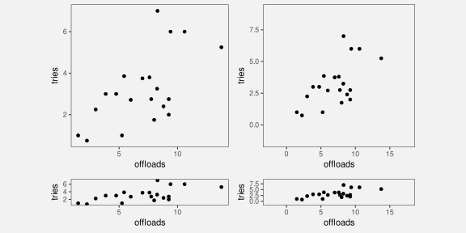
A related issue is the amount of empty space around the data points in a scatter plot. IN Figure 10.13, the relationship appears stronger in the top-right plot compared to the top-left plot simply because the data points are clustered more densely thanks to the different ranges on the plot axes.9
10.6 Implicit visual shapes
In Section 10.1, we contrasted a line plot (Figure 10.2), where multiple data values are encoded as a single data symbol (a line), with a scatter plot (Figure 10.4), where each data value is encoded as a separate data symbol (a data point). We did this to emphasise that encoding multiple data values as a single line data symbol generates a clear visual shape.
By contrast, encoding each data value to its own data point does not produce the same clear visual shapes.
However, it is still possible to decode shapes from Figure 10.4. For example, there are clearly two groups of points, orange and light blue points on a downward slope from top-left to bottom-right and green and dark blue points along the bottom. Even when we do not explicitly generate a data symbol that produces a visual shape, implicit visual shapes can emerge anyway. And it is possible to decode data summaries from those implicit visual shapes, just as we can from explicit visual shapes, although the data summaries may be less detailed and precise.
Figure 10.14 shows another example of an implicit visual shape. In this case, we have encoded the number of offenders per year in different ethnic groups to the heights of bars. As with Figure 10.4, each data value is encoded to its own bar, so there is no explicit visual shape, but the collection of bars for each ethnic group produces an implicit visual shape that allows us to decode data summaries, like overall decreases or increases over time.
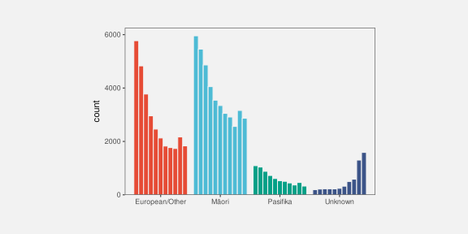
This is essentially the idea of visual summaries from Section 8.2. When we encode data values as many simple visual features, in addition to being able to decode individual data values from individual visual features, our visual system is sometimes capable of decoding data summaries from collections of visual features.
There is also a connection to our visual system’s tendency to complete lines and curves and to decode simpler interpretations from collections of simple shapes (Section 2.7 and Section 2.8).
10.7 Decoding visual shapes
As we saw in Section 10.4, if data values are encoded as a single, consistent visual feature of a visual shape, for example the colour of a line, then the original data values can be decoded from the basic visual feature, as described in earlier chapters for simpler data symbols like bars.
For data values that are encoded as different values of a visual feature, such as the positions that a line is drawn between, decoding from a visual shape results in data summaries (Figure 10.5), for example peaks and valleys. The visual system’s ability to rapidly and effortlessly identify a wide range of data summaries is part of why data visualisation is so effective. It is difficult to calculate data summaries numerically from the raw data with the same flexibility.10 On the downside, as we saw in Section 8.4 and Section 9.6, the huge range of possible data summaries means that less is known about how accurately we can decode any particular data summary.
There is experimental support for the intuitive sense that we can perform well at decoding qualitative features from shapes, such as peaks and valleys, as well as decoding ordinal comparisons, such as steeper and shallower.11 However, as Section 10.5 demonstrated, the decoding of slopes is limited to physical slopes, which are dependent on the aspect ratio, rather than decoding absolute rates of change in the data.12
10.8 Case study: Box plots
Figure 10.15 shows box plots of the number of points scored by Tier One nations at Rugby World Cup matches. We have discussed box plots previously as examples of data visualisations that encode data summaries to data symbols (Section 8.1). For example, the median points scored is encoded as the horizontal position of a thick vertical line for each team. The only raw data values that are directly encoded are the outliers, which are encoded as the horizontal position of data points for a few teams. A box plot is effective for decoding the median for each team because the median has been encoded as basic visual features of simple data symbol.
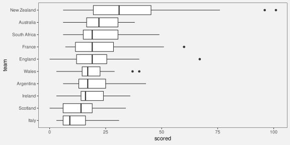
Box plots are also examples of encoding more than one data value (or data summary) to a single data symbol. For each team, we have a complex data symbol made up of a rectangle and horizontal and vertical lines, plus possibly some data points. This creates a visual shape that allows us to decode additional data summaries. For example, some box plots, like the one for England, are symmetric, with the median line at the center of the rectangle and with horizontal lines of similar lengths to either side. Other box plots, like the one for Argentina, are asymmetric, with the median towards one end of the rectangle and a longer horizontal line to one side. In other words, we can decode information about the skewness of the data from the visual shape (Figure 10.5).
10.9 Dangers of visual shapes
Figure 10.16 shows two data visualisations of average heights for males and females. We have already discussed that it is easier to decode the individual average height values from the bar plot because each average height is encoded as its own visual feature—the height of one bar. We have also discussed that it is easier to decode trends from a line plot (Section 10.1).
However, in Figure 10.16, the temptation to decode a trend from the line plot is in fact misleading. A line implies continuity, in this case even a linear trend. However, the data values on the x-axis are qualitative categories (biological sex), rather than a continuum. This means that decoding a trend from females to males does not actually make sense.13
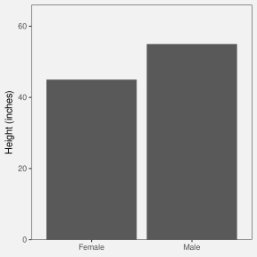
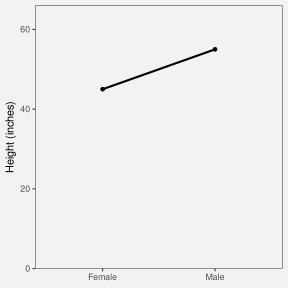
A visual shape can be decoded to a data summary, but that is only useful if the data summary is appropriate and not misleading (Figure 10.17).
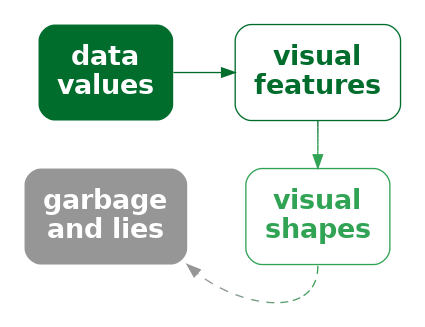
Figure 10.18 shows another example of an undesirable shape decoding. The two curves in Figure 10.18 are identical except that one has been shifted vertically. In other words, the vertical distance between the two lines is constant. In a data visualisation, we are typically interested in that vertical distance: what is the difference in y between the two lines?
However, the natural decoding of the distance between the lines focuses on the perpendicular distance, so the two lines appear to be converging.14 In other words, we decode the shape of the gap between the lines to be a narrowing gap.
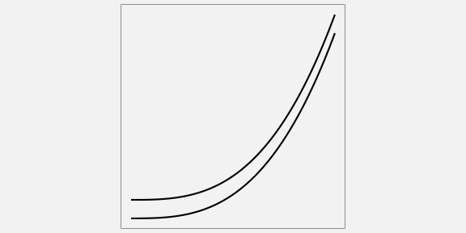
10.10 Non-linear encodings
Figure 10.19 shows time series plots of the number of international arrivals to New Zealand over the last century.15 Figure 10.19 (a) employs a linear scale on the y-axis and, because the amount of international travel has changed so dramatically over time, it is impossible to decode any detail from the first half of the twentieth century.
We saw in Section 4.7 that one approach in this sort of situation is to use a non-linear scale. Figure 10.19 (b) uses this approach by employing a log (base 10) scale on the y-axis. The advantage of the non-linear scale is clear: it is now possible to see details in the data for the first half of the twentieth century. For example, we can now see the effect of the Second World War (1939–1945), in addition to the effect of the COVID pandemic (2020–2021), and we can see that the seasonal patterns are similar over time.
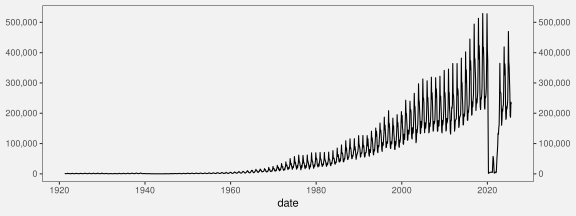
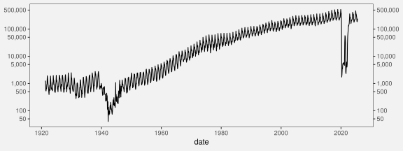
An important point is that all of these decodings are from the visual shapes in Figure 10.19 (b). We are able to decode an overall trend, local dips within the trend, and regular spikes within the overall trend.
However, as we pointed out in Section 4.7, the decoding of simple visual features is compromised by the use of a non-linear scale. For example, it is very difficult to decode the final value of the time series in Figure 10.19 (b) because the same distance between the tick marks on the y-axis does not represent the same difference in data values (as emphasised by the choice of tick mark labels). As we can see from Figure 10.19 (a), the final data value in the time series is not half-way between 100,000 and 500,000.
It is possible to decode quantitative values from Figure 10.19 (b). For example, the height of the seasonal changes remained fairly constant over time. However, that is an observation about the logged data, not the raw data values.16 The danger of a log scale is that our natural decoding of position and length is now incorrect. For example, (in the absence of Figure 10.19 (a)) we might be tempted to incorrectly decode from Figure 10.19 (b) that the absolute seasonal change in arrivals has remained constant over time. In other words, the natural decoding of simple visual features can be misleading in the presence of a non-linear scale.
10.11 Case study: log-log plots
Figure 10.20 shows a scatter plot of metabolic rate versus body mass for a wide range of lifeforms.17 Because of the very wide range of body mass values and metabolic rates, with the largest animals being many orders of magnitude larger than the smallest bacteria, almost all of the data is crushed into the bottom-left corner.
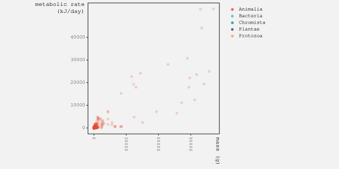
Figure 10.21 shows the same data, but this time with log (base 10) scales on both axes. While there is still considerable overlap, thanks to the large number of observations, we can now see data for the other Kingdoms beyond Animalia.
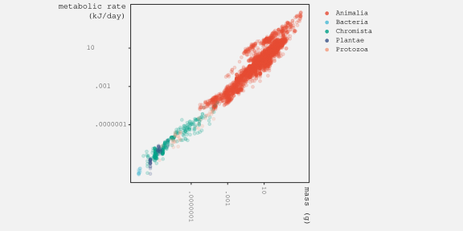
What we can also see in Figure 10.21 is a clear visual shape amongst the data symbols—a strong linear relationship. It is useful to be able to decode this linear shape from a plot with log scales because it indicates a power relationship between the two variables, in this case metabolic rate and body mass.18 It is also possible to decode ordinal information, such as the fact that animals are larger and use more energy than bacteria.
However, decoding the basic position of data symbols from a plot with log scales is very difficult because equal steps along either axis do not decode to equal steps between data values (as indicated by the axis labels).
For example, we cannot easily decode how much bigger animals are than bacteria. There is even danger, for the uninitiated, in decoding the linear visual shape because it does not decode to a linear relationship between the raw data values.
Once again, we have a data visualisation that can be usefully decoded in a particular way, but which also contains encodings that are difficult and potentially misleading.
10.12 Summary
Encoding multiple rows of data values to a single data symbol produces a visual shape, like a line on a line plot.
The main benefit of a data symbol that is a visual shape is that data summaries, such as modes, skewness, local maxima and minima, and trends over time, can can be decoded from a visual shape. On the downside, decoding raw data values from a visual shape may be harder, compared to decoding raw data values from a simple data symbol like a bar.
One danger with visual shapes is that they depend on aspect ratio and scale. The same encodings can be made to decode to different data summaries, so we are responsible for selecting an appropriate aspect ratio and scale.
Another danger is that a visual shape may not necessarily convey a useful data summary. We need to only create visual shapes in a purposeful manner and avoid accidentally creating visual shapes that may confuse or mislead.
Bartonicek, Adam. 2023. “The Fabric of Interactive Visualization: From the Algebra of Graphics, Statistics, and Interaction to Practical Implementation.” Online at https://bartonicek.github.io/thesis/.
Braun, Daniel, Remco Chang, Michael Gleicher, and Tatiana von Landesberger. 2025. “Beware of Validation by Eye: Visual Validation of Linear Trends in Scatterplots.” IEEE Transactions on Visualization and Computer Graphics 31 (1): 787–97. https://doi.org/10.1109/TVCG.2024.3456305.
Castro, Francisco de. 2025. “FmrBT: A Comprehensive Data Set of Field Metabolic Rates, Body Mass and Ambient Temperature.” Scientific Data 12 (1): 1589. https://doi.org/10.1038/s41597-025-05868-y.
Chandola, Varun, Arindam Banerjee, and Vipin Kumar. 2009. “Anomaly Detection: A Survey.” ACM Comput. Surv. 41 (3). https://doi.org/10.1145/1541880.1541882.
Cleveland, William S. 1994. The Elements of Graphing Data. 2nd ed. Summit, NJ: Hobart Press.
Cleveland, William S., Marylyn E. McGill, and Robert McGill. 1988. “The Shape Parameter of a Two-Variable Graph.” Journal of the American Statistical Association 83 (402): 289–300. https://doi.org/10.1080/01621459.1988.10478598.
Cleveland, William S., and Robert McGill. 1985. “Graphical Perception and Graphical Methods for Analyzing Scientific Data.” Science 229 (4716): 828–33. https://doi.org/10.1126/science.229.4716.828.
Correll, Michael, and Jeffrey Heer. 2017. “Regression by Eye: Estimating Trends in Bivariate Visualizations.” In Proceedings of the 2017 CHI Conference on Human Factors in Computing Systems, 1387–96. CHI ’17. New York, NY, USA: Association for Computing Machinery. https://doi.org/10.1145/3025453.3025922.
Few, Stephen. 2006. “Visual Pattern Recognition: Meaningful Patterns in Quantitative Business Information.” Seattle, WA: Perceptual Edge. \url{https://www.perceptualedge.com/articles/Whitepapers/Visual_Pattern_Rec.pdf}.
Gleicher, Michael, Danielle Albers, Rick Walker, Ilir Jusufi, Charles D. Hansen, and Jonathan C. Roberts. 2011. “Visual Comparison for Information Visualization.” Information Visualization 10 (4): 289–309. https://doi.org/10.1177/1473871611416549.
Kleiber, Max. 1947. “Body Size and Metabolic Rate.” Physiological Reviews 27 (4): 511–41. https://doi.org/10.1152/physrev.1947.27.4.511.
Kosslyn, Stephen M. 1989. “Understanding Charts and Graphs.” Applied Cognitive Psychology 3 (3): 185–225.
Marr, David. 1982. Vision: A Computational Investigation into the Human Representation and Processing of Visual Information. San Francisco: W.H. Freeman; Company.
Peebles, David. 2008. “The Effect of Emergent Features on Judgments of Quantity in Configural and Separable Displays.” Journal of Experimental Psychology: Applied 14 (2): 85–100. https://doi.org/10.1037/1076-898X.14.2.85.
Proma, Rifat Ara, Michael Correll, Ghulam Jilani Quadri, and Paul Rosen. 2025. “Visual Stenography: Feature Recreation and Preservation in Sketches of Noisy Line Charts.” https://arxiv.org/abs/2510.11927.
Stevens, K. A. 1978. “Computation of Locally Parallel Structure.” Biological Cybernetics 29 (1): 19–28. https://doi.org/10.1007/BF00365232.
Wickens, Christopher D., and C. Melody Carswell. 1995. “The Proximity Compatibility Principle: Its Psychological Foundation and Relevance to Display Design.” Human Factors 37 (3): 473–94. https://doi.org/10.1518/001872095779049408.
Zacks, Jeff, and Barbara Tversky. 1999. “Bars and Lines: A Study of Graphic Communication.” Memory & Cognition 27 (6): 1073–79. https://doi.org/10.3758/BF03201236.
Ziemkiewicz, Caroline, and Robert Kosara. 2009. “Embedding Information Visualization Within Visual Representation.” In Advances in Information and Intelligent Systems, edited by Zbigniew W. Ras and William Ribarsky, 307–26. Berlin, Heidelberg: Springer Berlin Heidelberg. https://doi.org/10.1007/978-3-642-04141-9_15.
In this chapter, we focus on data symbols that represent multiple sets of data values, like lines. It could be argued that there are data symbols that are visual shapes that arise from encoding a single, qualitative data value to a data symbol, for example, different data points—circles versus triangles versus squares—in a scatter plot. However, in this book, that case is referred to as a encoding from qualitative data value to the pattern—a basic visual feature—of a data symbol (Section 3.2).↩︎
Few (2006, 10) discusses this difference in a comparison between a density plot (mostly see a shape) and a histogram (mostly see bar heights).↩︎
“not only is a line a single perceptual unit, and hence there will be less to hold in short-term memory, but we are good at detecting slope differences—which convey the relevant information” (Kosslyn 1989, 211)↩︎
According to Zacks and Tversky (1999) people use trend words (increasing/decreasing) versus discrete words (higher/lower than) and are faster to judge absolute values from bars but angle from line graphs.↩︎
Ziemkiewicz and Kosara (2009) refer to this as a non-injective encoding and point out that it makes it impossible for there to be a decoding, because multiple data values encode to the same data symbol. This is in contrast to a bijective encoding, which is one-to-one between data values and data symbols (Section 3.1).
This problem also relates to the issue of drawing data symbols on top of each other (Section 4.3). If two data symbols completely overlap, for example if two data points on a scatterplot overlap, then it is impossible to decode both individual data values.
Figure 4.5 of Bartonicek (2023) has an interesting, if pathological, demonstration of this problem using a simple bar plot. The bar plot has a single bar that represents the sum of counts for two categories. In this demonstration there is also a bar just for one of the counts, so that, with unnecessary mental effort, it is possible to recover the “hidden” data value, but we can imagine an even more pathological demonstration which would encode two data values to a single bar, without encoding one of the data values to its own bar. In that case it would be completely impossible to decode the two data values from the single bar.↩︎
Peebles (2008) describes a line plot as configural—rather than either separable (Section 9.1) or integral (Section 9.2)—which means that it is possible to decode individual data values and data summaries, but that configural displays lead to poorer decoding of individual data values. This also links to the display proximity principal (Wickens and Carswell 1995).↩︎
The median-absolute-slope criterion suggests choosing an aspect ratio such that the median absolute slope of the line segments between points is \(45^{\circ}\) (also known as the 45 degree banking rule) (W. S. Cleveland, McGill, and McGill 1988). This is shown to produce the most accurate decoding of slopes.↩︎
W. S. Cleveland, McGill, and McGill (1988) draws on the idea of virtual lines between the data points, from Marr (1982) and Stevens (1978), to relate the decoding of trends from lines in a line plot with the decoding of trends from data points in a scatter plot.↩︎
William S. Cleveland (1994) states that “our estimation of correlation is strongly affected by the area of the data rectangle relative to the area of the scale-line rectangle” and provides demonstrations (Figure 4.15 and 4.16).↩︎
The survey of anomaly-detection techniques by Chandola, Banerjee, and Kumar (2009) gives a sense of how difficult it is to provide a general-purpose numerical technique for detecting features of interest in data values.↩︎
Proma et al. (2025) showed that people are good at reproducing (therefore identifying) trends, peaks, and valleys, if less so at reproducing periodicity, noise/variability.
Correll and Heer (2017) showed that decoding of trends from line plots (and scatter plots) is quite accurate, at least relative to ordinary-least-squares models.↩︎
W. S. Cleveland, McGill, and McGill (1988) points out that the accuracy of decoding slopes is only relevant to comparing the relative steepness of different regions of a line. This is not accuracy in terms of decoding the actual rate of change in the data. For that purpose, we should encode the actual rate of change directly.↩︎
The data visualisations are based on Figure 2 from Zacks and Tversky (1999). An example of one subject’s decoding of the line plot was: “The more male a person is, the taller he/she is”↩︎
This decoding of the difference between lines is described in W. S. Cleveland and McGill (1985). The recommended solution is to encode the difference between the lines, rather than requiring the viewer to perform the subtraction visually. Gleicher et al. (2011) call that solution explicit encoding.
Braun et al. (2025) describe a similar issue with estimating the line of best fit from data points in a scatter plot. Their results showed a bias towards orthogonal distance to the line of best fit rather than vertical distance.↩︎
These plots are based on plots posted by Peter Ellis on a StackExchange thread. The data are from Stats NZ and licensed by Stats NZ for reuse under the Creative Commons Attribution 4.0 International licence.↩︎
This observation does have a sensible interpretation: the consistent difference in logged values sugests that the size of seasonal changes is consistent relative to the absolute size of arrivals. In other words the seasonal change in arrivals divided by the absolute number of arrivals is consistent over time. However, that interpretation is not a simple, sub-conscious decoding of visual features; it requires a more sophisticated mental effort and a self-discipline to ignore the more naive decoding.↩︎
This power relationship between metabolic rate and body mass is known as Kleiber’s Law (Kleiber 1947).↩︎